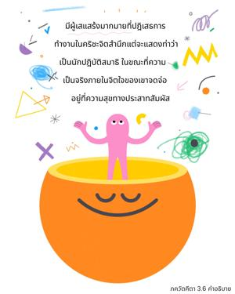
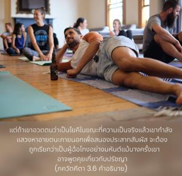
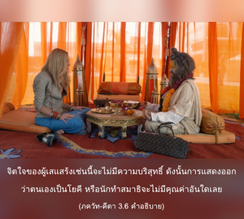

ผู้ที่เหนี่ยวรั้งการทำงานของประสาทสัมผัสแต่ว่าจิตใจยังจดจ่ออยู่ที่ รูป รส กลิ่น เสียง และสัมผัส เขาเป็นผู้หลอกตัวเอง และได้ชื่อว่าเป็นผู้เสแสร้งอย่างแน่นอน



มีผู้เสแสร้งมากมายที่ปฏิบัติการทำงานในกฺฤษฺณจิตสำนึก แต่จะแสดงท่าว่าเป็นนักปฏิบัติสมาธิ ในขณะที่ความเป็นจริงภายในจิตใจของเขาจดจ่ออยู่ที่ความสุขทางประสาทสัมผัส บางครั้งผู้เสแสร้งเช่นนี้อาจคุยปรัชญาอย่างลมๆ แล้งๆ เพื่อชักชวนศิษย์ผู้สับสนไปในทางที่ผิด แต่ตามโศลกนี้บุคคลเหล่านี้ถือว่าเป็นผู้ฉ้อโกงอย่างมหันต์ เพื่อความสุขทางประสาทสัมผัสแล้วนั้นคนเราสามารถทำทุกสิ่งทุกอย่างในสังคมได้ แต่หากว่าเขาปฏิบัติตามกฎเกณฑ์ในระดับสังคมที่ตนเองอยู่ เขาก็จะสามารถค่อยๆ ทำให้ชีวิตความเป็นอยู่ของตนบริสุทธิ์ขึ้นได้ แต่ถ้าเขาอวดตนว่าเป็นโยคี ทั้งที่ความเป็นจริงแล้วเขากำลังแสวงหาอายตนะภายนอกเพื่อสนองประสาทสัมผัสจะต้องถูกเรียกว่า เป็นผู้ฉ้อโกงอย่างมหันต์ แม้บางครั้งเขาอาจพูดคุยเกี่ยวกับปรัชญา แต่วิชาความรู้ของเขานั้นไร้คุณค่า เพราะว่าผลแห่งวิชาความรู้ของคนบาปเช่นนี้ได้ถูกพลังงานแห่งความหลงขององค์ภควานฺยึดเอาไปเสียแล้ว จิตใจของผู้เสแสร้งเช่นนี้จะไม่มีความบริสุทธิ์ ดังนั้น การแสดงออกว่าตนเองเป็นโยคี หรือนักทำสมาธิจะไม่มีคุณค่าอันใดเลย